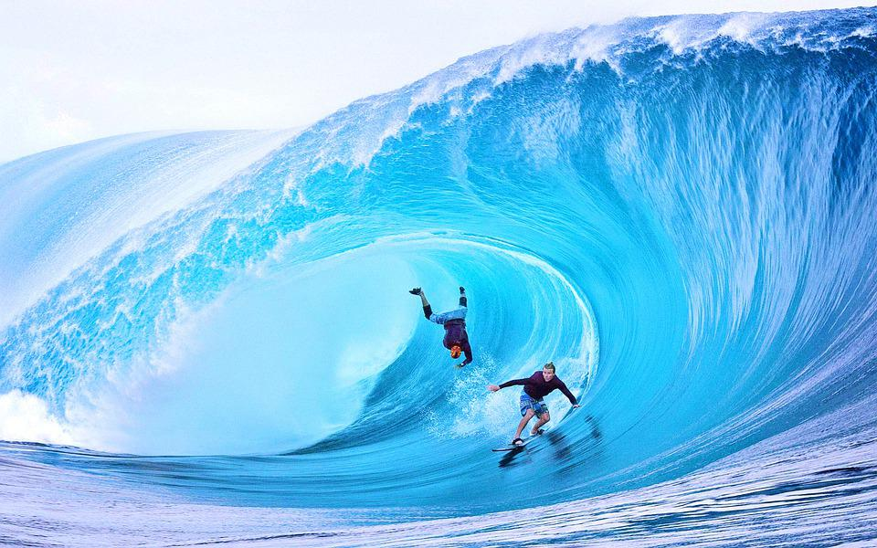

yogev you got it?

what is big wave surfing?
Big wave surfing is a discipline within surfing in which experienced surfers paddle into
, or are towed into, waves which are at least 20 feet (6.2 m) high, on surf boards known as "guns" or towboards.
the biggest waves in the world
- Praia do Norte | Nazaré, Portugal
- Jaws/Peahi | Maui, Hawaii
- Teahupoo | Tahiti, French Polynesia
- Shipstern Bluff | Tasmania, Australia
- Belharra | La Côte Basque, France
The biggest wave of the world

The earliest settlements were in Pederneira and in Sítio,
above the beach. They provided the inhabitants with refuge against raids by Viking and, later, French, English and Dutch pirates,
that lasted until as late as the beginning of
the 19th century.
[4] In fact, only in the 19th century, with the gradual end of maritime piracy, was possible for the people to start occupying
the Praia which is today considered the town center.
According to the Legend of Nazaré, the town derives its name from a small wooden statue of the Virgin Mary,
brought from Nazareth, Holy Land, to a monastery near the city of Mérida, Spain, by a monk in the 4th century.
The statue was brought to its current location in 711 by another monk, Romano, accompanied by Roderic, the last
Visigoth king of today's Portugal. After their arrival at the seaside they decided to become hermits. Romano lived
and died in a small natural grotto, on top of a cliff above the sea. After his death and according to his
wishes, the
king buried him in the grotto. Roderic left the statue of the Black Madonna in the grotto on an altar.